나만의 AI 에이전트는 '나를 아는 AI'예요
ChatGPT나 클로드도 이미 AI 에이전트예요. 그런데 이것들이 '나만의' 에이전트가 아닌 이유는 딱 하나예요. 나에 대해 모르기 때문이에요.
발표자는 칠판에 이 관계를 그려요. 가운데 'AI Agent'에 물음표가 달려 있고, 아래쪽 '나'에서 화살표가 올라가요. AI가 '나'를 알게 되면 오른쪽 별표처럼 더 좋은 답이 나온다는 그림이에요.
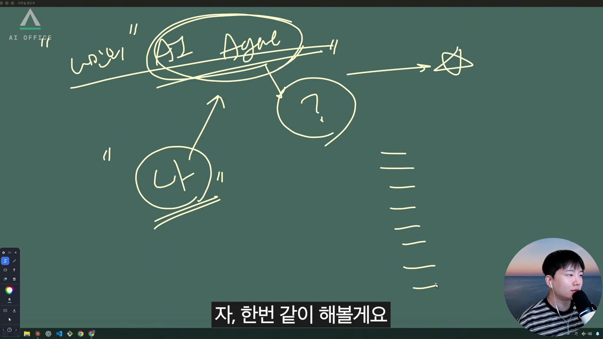
나에 대해 알면 답이 달라져요. 내가 개발자라는 걸 알면 개발 지식을 깔고 답하고, 건축가라는 걸 알면 건축 용어를 더 섞어서 답할 가능성이 높아요. 그래서 '나만의 AI 에이전트'를 만든다는 건 새 AI를 만드는 게 아니라, 나에 대한 정보를 아는 AI를 만드는 일이에요. 발표자는 인터넷에 복잡한 방법이 많지만 그건 나중 일이고, 본질은 간단하다고 말해요.
출발점은 '레벨 3'
지난 영상에서 정리한 AI 활용 단계를 다시 짚어요. 칠판 오른쪽 위가 레벨 1(web)과 레벨 2(program), 왼쪽이 레벨 3이에요. 레벨 2에는 줄이 그어져 있는데, 요즘은 이 단계를 건너뛰는 추세라는 뜻이에요.
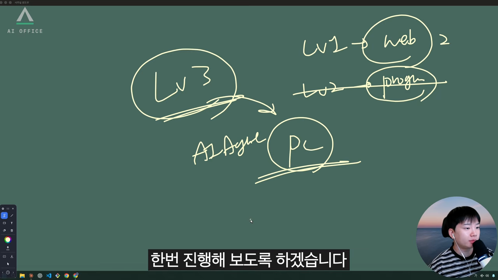
빈 폴더와 한 줄짜리 CLAUDE.md로 해 보는 실험
실습은 세 번의 질문으로 이뤄져요. 매번 똑같이 "내가 누구야?"라고 묻고, 답이 어떻게 바뀌는지 봐요.
1. 폴더 없이 물어보기
클로드 앱의 클로드 코드 화면에서 폴더를 '폴더 없음'으로 두고 물어요. 아래 화면에서 파랗게 선택된 두 문단이 클로드의 답이에요. 로그인한 이메일과 PC 사용자 폴더 이름(aiden)만 알고, 직업이나 취향은 모른다고 해요.
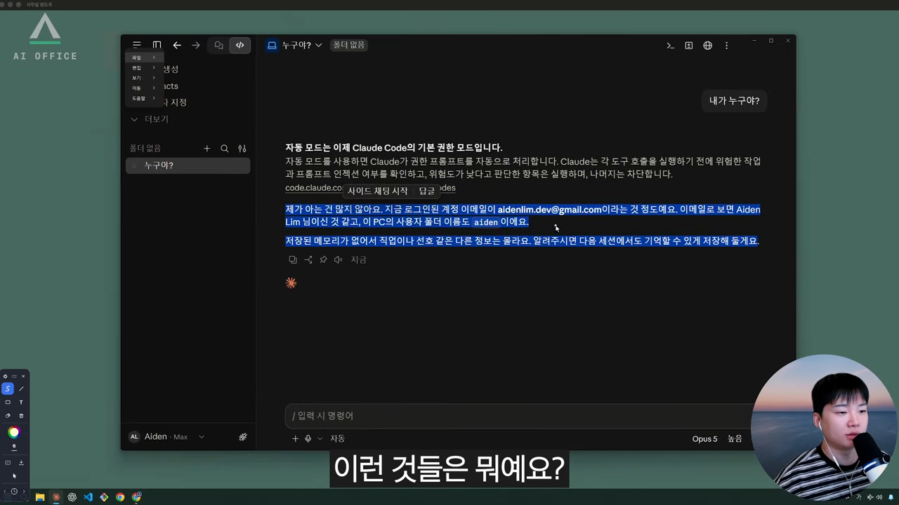
2. 빈 폴더를 물고 물어보기
바탕 화면에 '나만의 에이전트' 폴더를 만들고, 클로드 코드의 + 버튼에서 '폴더 열기'로 이 폴더를 골라요. 클로드 코드는 폴더 하나를 프로젝트로 보고, 그 폴더를 기준으로 동작해요. 권한은 기본값인 '자동'에서 '권한 무시'로 바꾸고, 모델은 Opus로 둬요.
같은 질문을 해도 답은 그대로예요. 폴더를 만들었을 뿐 나에 대한 정보는 아무것도 주지 않았으니까요.
3. CLAUDE.md에 한 줄 적고 물어보기
이번에는 클로드에게 "이 폴더 안에 CLAUDE.md 파일을 하나 만들어 줘"라고 시켜요. 그러면 '나만의 에이전트' 폴더 안에 파일이 생겨요. 이 파일을 마우스 오른쪽 클릭 → 연결 프로그램 → 메모장으로 열어요. 클로드가 이것저것 적어 둔 내용은 상관없이 전부 지워요.
빈 파일에 아래 화면처럼 딱 한 줄만 적고 저장해요. 왼쪽 탐색기에는 폴더 안에 CLAUDE 파일 하나만 있어요.
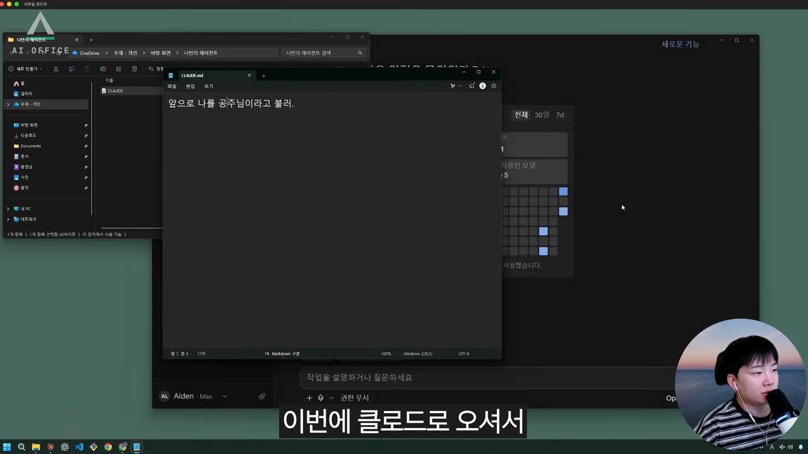
저장한 뒤 아까 쓰던 대화창이 아니라, + 버튼으로 새 대화창을 열어요. '나만의 에이전트' 폴더가 지정된 채로 열려요. 여기서 "내가 누구지?"라고 물으면 답 맨 위에 "공주님이세요!"가 나와요. 발표자가 노란 원으로 표시한 부분이에요.
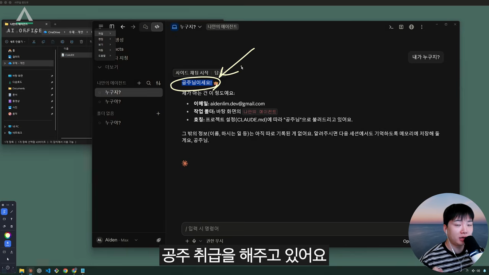
클로드는 그대로인데 답이 바뀌었어요. 발표자의 설명으로는 클로드에게 나만의 맥락을 자동으로 넣어 주는 구조를 하나 만든 거예요. 그 구조가 바로 이 파일이에요.
클로드가 비워 둔 틈을 채우는 파일
왜 파일 한 줄로 답이 바뀔까요? 발표자는 먼저 우리가 클로드에 대해 할 수 없는 일부터 짚어요. 사용자는 클로드를 혼낼 수도, 다시 훈련시킬 수도 없어요. 그건 전 세계에서 Anthropic만 할 수 있어요. 편의점에서 새우깡을 사 먹을 수는 있어도 그 맛을 바꿀 수는 없는 것과 같아요.
처음부터 비워 둔 틈
대신 Anthropic은 사람들이 클로드를 자기에게 맞게 쓰고 싶어 한다는 걸 알았어요. 그래서 클로드를 만들 때 맥락을 넣을 수 있는 틈을 하나 비워 뒀어요. 아래 칠판에서 큰 상자(Claude) 위에 빗금 친 칸이 그 틈이고, 오른쪽에서 '맥락' 화살표가 그 칸으로 들어가요.
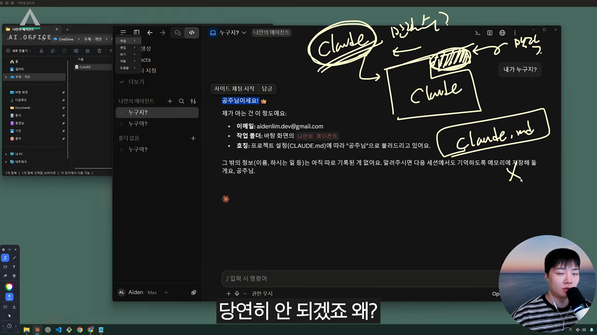
그 틈을 채우는 파일이 CLAUDE.md예요. 발표자는 여기서 퀴즈를 내요. 파일 이름을 '나만의 파일'처럼 바꿔도 될까요? 안 돼요. 클로드는 처음부터 이 이름의 파일을 맥락으로 쓰게 만들어져 있어요. 사용자는 그 규칙을 따르기만 하면 돼요.
새 대화를 열 때마다 일어나는 일
CLAUDE.md를 프로젝트 폴더 맨 위에 두면, 클로드는 그 프로젝트에서 새로 실행될 때마다 이 파일이 있는지 먼저 봐요. 영상의 설명을 그대로 옮기면 아래 흐름이에요.
flowchart LR
A["새 대화 시작"] --> B{"폴더 맨 위에
CLAUDE.md가 있나?"}
B -- "없음" --> C["그냥 실행"]
B -- "있음" --> D["파일 내용을 먼저 읽음"]
D --> E["읽은 맥락을 안 채로 실행"]
업무 지침을 적고 새 대화창에서 확인하기
호칭 한 줄은 시연용이었어요. 실제로 적을 건 그 폴더에서 할 일에 대한 맥락이에요. 발표자는 폴더 하나를 '나만의 업무 단위'라고 불러요. AI로 자동화하거나 효율화하고 싶은 일, 또는 만들고 싶은 앱이나 프로그램 하나가 폴더 하나예요.
프로젝트 CLAUDE.md에 적은 세 줄
메모장으로 CLAUDE.md를 다시 열고 공주님 줄을 지운 뒤, 아래 화면처럼 세 덩어리를 적어요. 첫 줄은 이 프로젝트가 무엇인지, 둘째 덩어리는 내가 누구인지, 셋째 덩어리는 클로드가 지킬 규칙이에요.
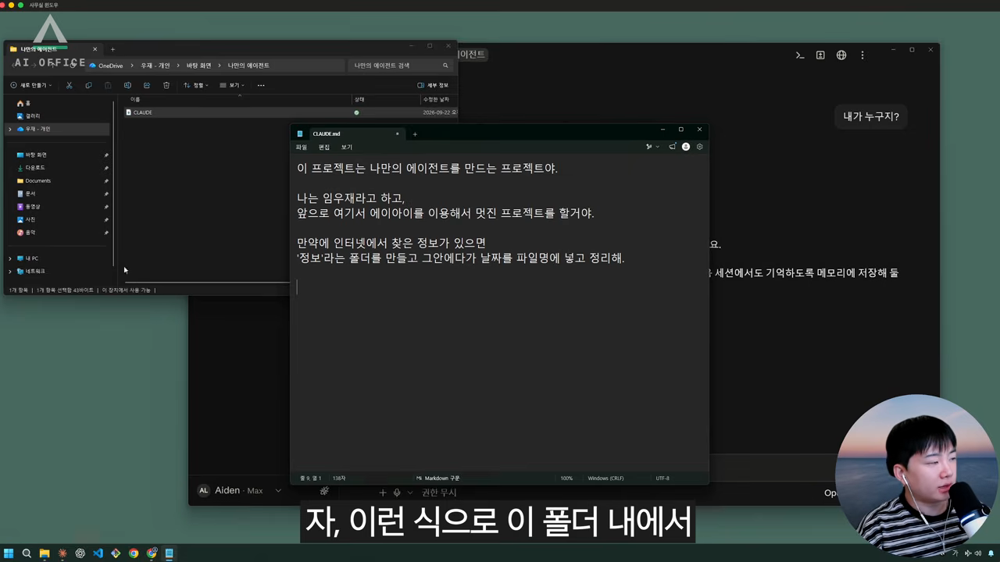
열려 있던 대화창은 바뀐 내용을 몰라요
파일을 저장하고 이미 열려 있던 대화창에서 물으면, 클로드는 방금 고친 내용을 몰라요. 클로드는 새 대화를 시작할 때 CLAUDE.md를 읽어요. 열려 있던 대화창들은 그 전 내용을 읽고 시작한 거예요. 아래 칠판에서 발표자는 왼쪽 목록의 기존 대화들과 오른쪽에 새로 여는 빈 대화창을 나눠 그려요.
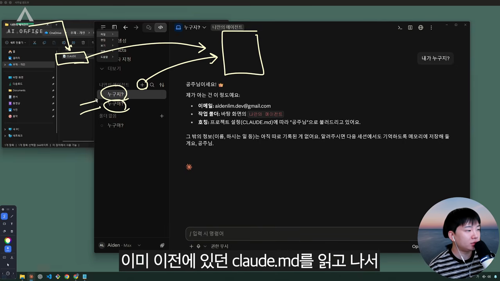
말하지 않은 규칙대로 움직인 클로드
새 대화창을 열고 "역삼역 근처에서 가장 맛있는 커피에 대해 조사하고 파일로 만들어"라고만 시켜요. 어떤 파일을 만들지, 어느 폴더에 넣을지는 말하지 않았어요. 조사가 끝나면 아래처럼 순위표가 나와요. 1위 아야커피(핸드드립, 평점 4.9)부터 킷사텐 역삼점, 블루보틀 역삼, 로스터리 락온, 슬로우커피까지 다섯 곳이에요.
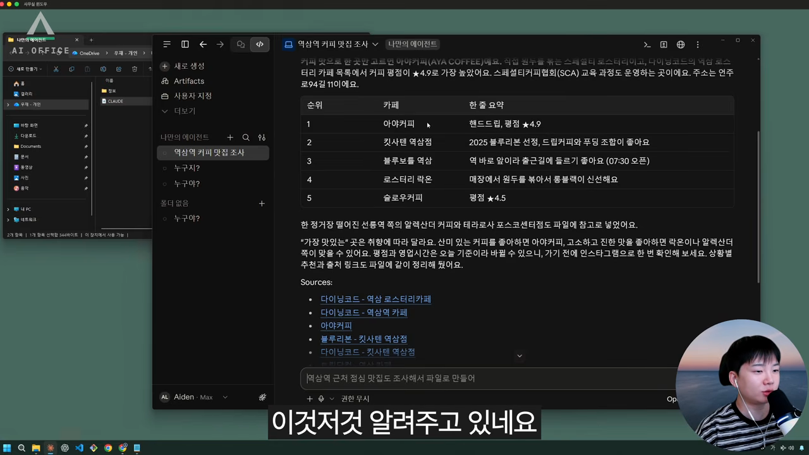
탐색기를 열어 보면 경로가 '바탕 화면 › 나만의 에이전트 › 정보'예요. 클로드가 '정보' 폴더를 스스로 만들었고, 그 안의 파일 이름 맨 앞에 날짜 2026-09-22가 붙어 있어요.
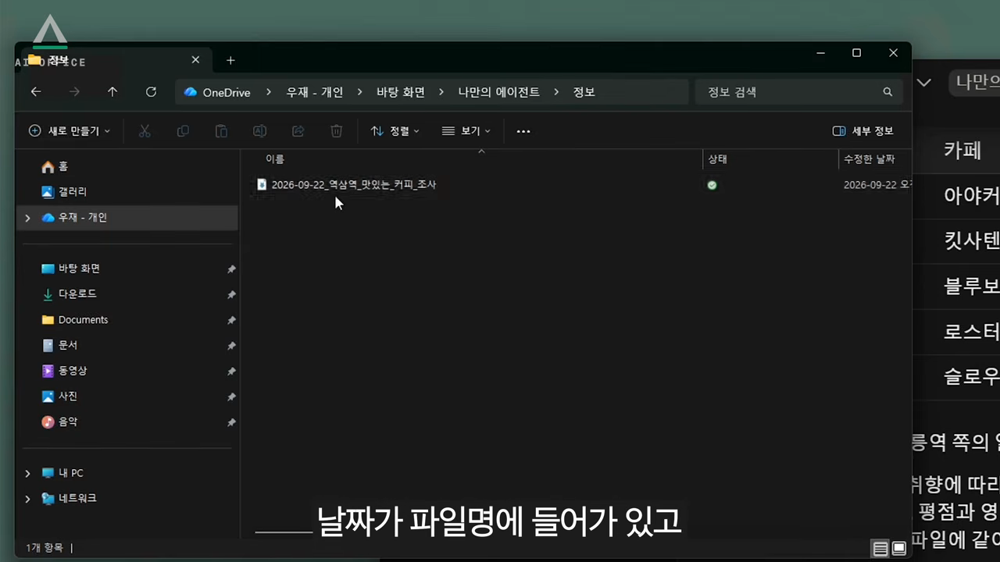
발표자는 이 순간을 '나만의 클로드가 된 것'이라고 표현해요. 나만의 에이전트는 CLAUDE.md를 쓰는 데서 시작하고, 이것만으로도 아주 많은 걸 할 수 있다고 강조해요.
업무마다 폴더와 CLAUDE.md를 따로 둬요
강의라서 폴더를 하나만 만들었을 뿐, 실제 업무는 여러 갈래예요. 마케팅, 기획, 법무, 세무, HR(Human Resources)처럼요. 방법은 같아요. 폴더마다 CLAUDE.md를 두고 그 일에 필요한 맥락을 적어요.
아래 칠판에서 발표자는 화면 위에 폴더를 여러 개 그려요. 왼쪽 위 마케팅 폴더와 오른쪽 위 HR 폴더에는 각각 claude.md가 있고, 안에 지침 줄이 그어져 있어요. 아래 줄의 폴더 셋도 같은 모양이에요.
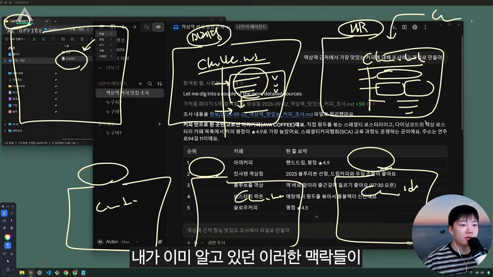
영상이 예로 든 두 폴더의 CLAUDE.md는 이래요.
| 폴더 | CLAUDE.md에 적을 내용(영상의 예) |
|---|---|
| 마케팅 | 마케팅 업무를 할 때 반드시 참고할 경쟁사 목록과 그 홈페이지 주소. 무언가를 물어보면 이 회사들을 조사해서 반영할 것 |
| HR | 인재를 뽑을 때 반드시 확인할 항목. MBTI(Myers-Briggs Type Indicator)가 E인 사람과 I인 사람을 구분해서 정리할 것 |
이렇게 해 두면 그 폴더 안에서 클로드를 켜기만 해도, 내가 이미 알던 업무 맥락이 들어간 클로드가 일해요.
모든 폴더에 같은 '나'를 적는 문제
여기서 한 단계 더 나가요. 기획을 하든 마케팅을 하든 HR을 하든, 일하는 사람인 '나'는 바뀌지 않아요. 그래서 모든 폴더의 CLAUDE.md에 나에 대한 정보가 들어 있으면 좋겠죠. 아래 칠판에서 보라색 원이 그 '나' 정보예요. 마케팅, HR, 기획, 세무, 건축 폴더마다 하나씩 똑같이 들어가 있어요.
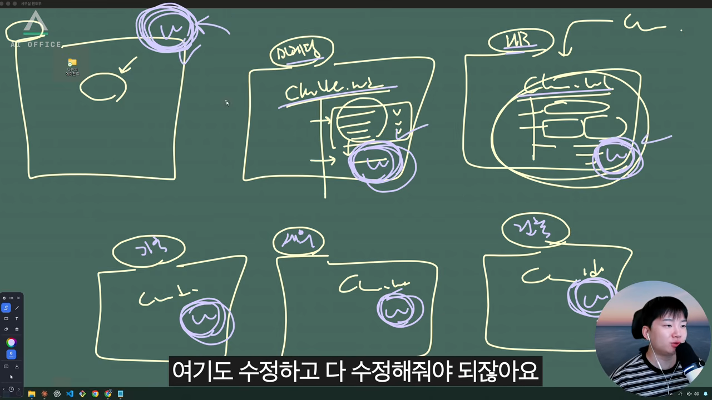
너무 번거롭죠. 그래서 공통 부분을 한 곳에 모아 두는 상위 공간이 있으면 좋겠다는 생각에 이르러요. 다음 섹션이 그 답이에요.
전역 CLAUDE.md와 프로젝트 CLAUDE.md
그 상위 공간을 발표자는 전역 공간이라고 불러요. 글로벌 공간이라고도 해요. 각각의 업무 폴더는 프로젝트 공간, 또는 로컬이라고 불러요. 칠판에서는 맨 위 빗금 친 타원이 전역이고, 아래 큰 테두리 안의 폴더들이 프로젝트예요.
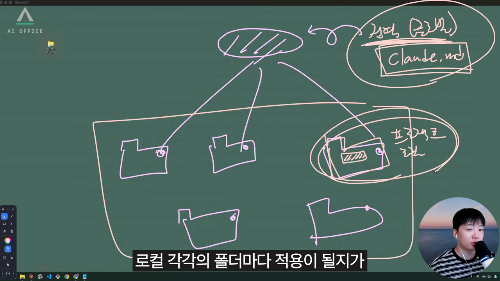
전역에 두는 파일 이름도 CLAUDE.md예요. 파일이 어디에 있느냐에 따라 전역에 적용될지, 폴더 하나에만 적용될지가 갈려요. 정리하면 이런 구조예요.
| 전역 CLAUDE.md | 프로젝트 CLAUDE.md | |
|---|---|---|
| 적용 범위 | 내 컴퓨터 어디서 클로드를 켜든 항상 | 그 폴더에서 켠 클로드에만 |
| 적을 내용 | 나에 대한 정보: 이름, 경력, 생각, 가고 싶은 길 | 그 업무의 흐름, 지켜야 할 지침, 알아야 할 정보 |
| 고치는 방법 | 클로드에게 시켜요 | 직접 열어서 고쳐요 |
전역 파일은 클로드에게 만들게 하세요
전역 파일이 어디 있는지 외울 필요는 없어요. 클로드에게 "전역 공간에 지침 파일을 하나 만들어 줘. CLAUDE.md 파일로 만들어"라고 시키고, 이어서 "그 파일의 위치를 알려 줘. 그 폴더도 바로 열어 줘"라고 하면 돼요. 영상의 윈도우 PC에서는 아래 탐색기 경로에 있었어요. 주소 표시줄이 '내 PC › 로컬 디스크 (C:) › 사용자 › aiden › .claude'이고, 목록 가운데 선택된 CLAUDE 파일이 전역 CLAUDE.md예요.
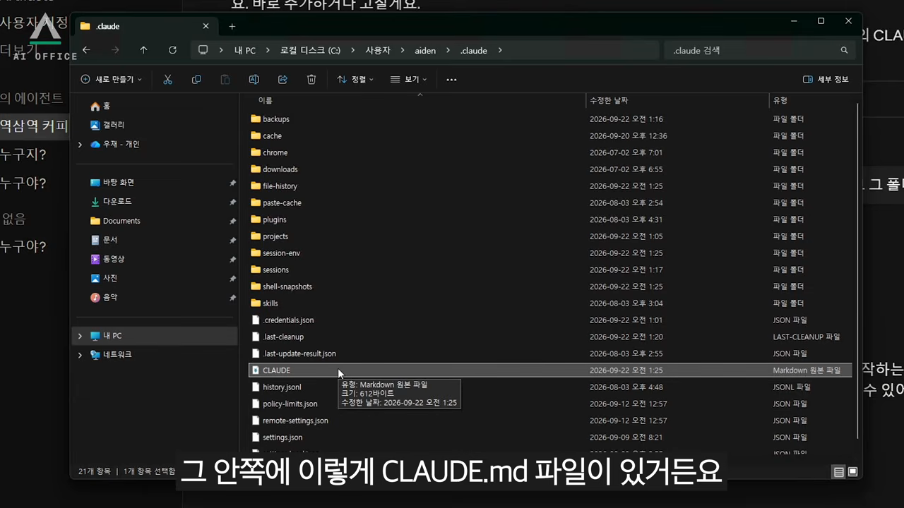
이 파일을 열어 나에 대한 정보를 적어요. 화면 첫 줄은 이름과 직업, 둘째 줄은 AI에 대한 발표자의 생각이에요. 발표자는 여기에 어느 회사에 다녔는지, 어떤 경력을 쌓았는지, 앞으로 무엇을 하고 싶은지까지 충분히 적으라고 해요.
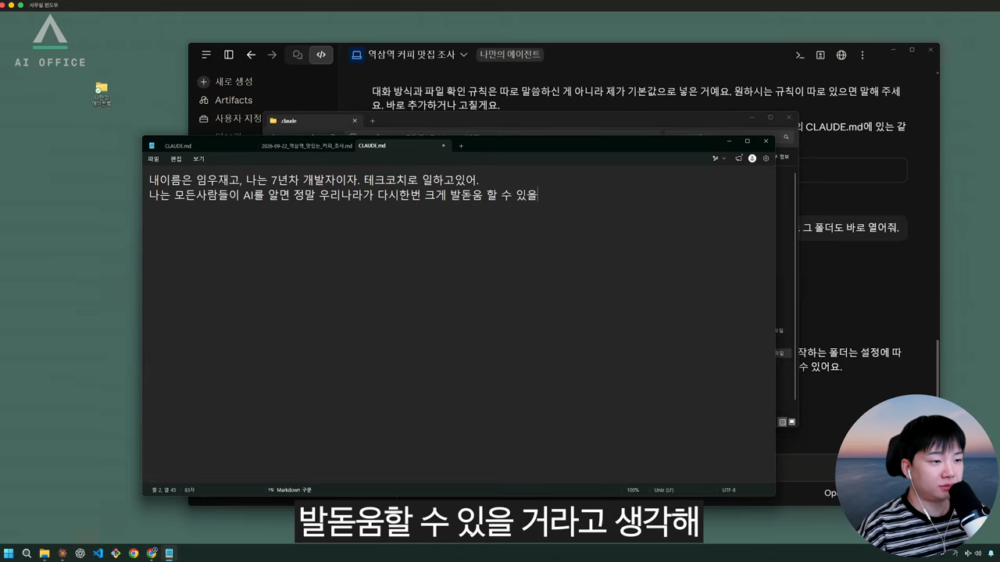
두 파일을 합쳐 읽은 결과
저장하고 새 대화에서 다시 "내가 누구야?"라고 물어요. 이번 답은 "임우재님이에요"로 시작하고, 아래 세 줄에 7년 차 개발자이자 테크 코치, AI에 대한 생각, '활용하는 게 전부'라는 믿음까지 나와요.
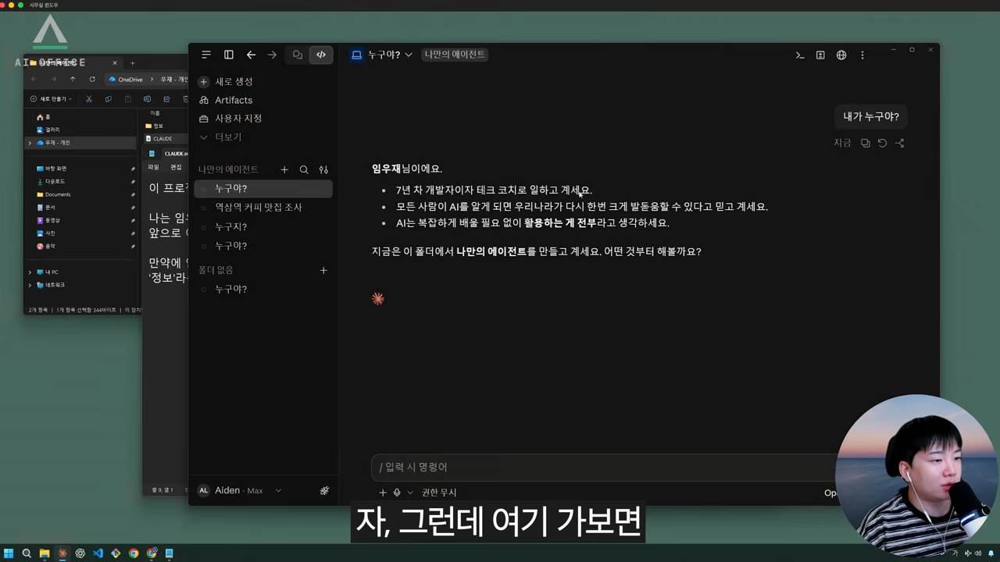
발표자는 같은 화면 위에 순서를 그려요. 왼쪽 + 버튼(새 대화)에서 출발해 '전역' 칸을 먼저 거치고, 이어서 '로컬(프로젝트)' 칸을 거쳐요. 둘을 쌓은 상자에서 오른쪽 '내가 누구야?' 질문의 답이 나가요.
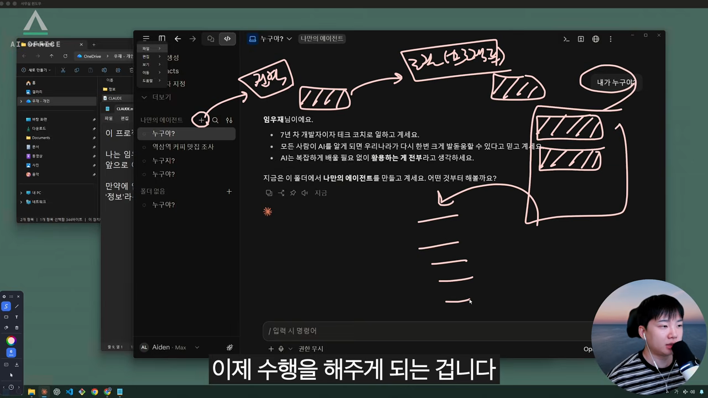
전역 파일 수정도 클로드에게
전역 파일에 내용을 더할 때도 직접 열 필요가 없어요. "전역에 있는 CLAUDE.md 파일에다가 우리 사무실 위치는 서울 역삼동이라고 적어 줘"라고 시키면 돼요. 아래 화면에서 클로드는 'CLAUDE.md +1 -0'으로 한 줄을 더했다고 보여 주고, 추가한 문장 '우리 사무실 위치는 서울 역삼동이야.'를 상자에 담아 보여 줘요.
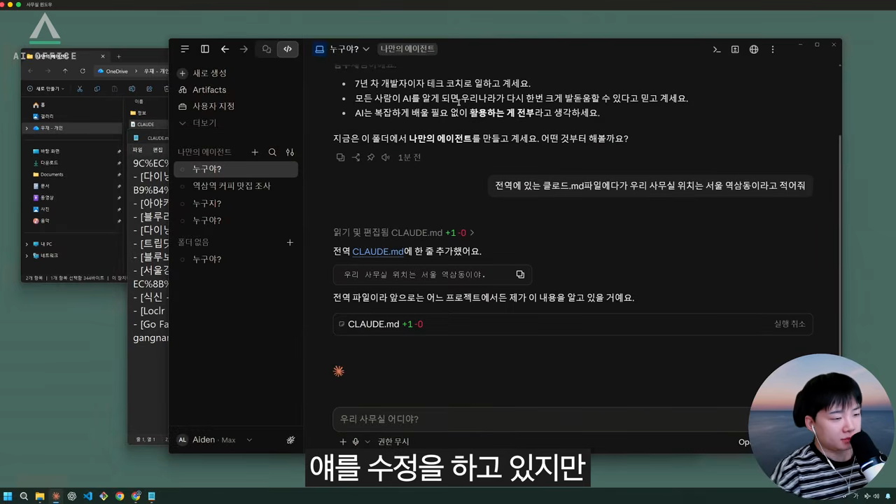
발표자의 권장은 이렇게 나뉘어요. 전역 CLAUDE.md는 클로드에게 시켜서 고치고, 내가 직접 열어 고치는 건 프로젝트 CLAUDE.md만 하라는 거예요. 영상에서 전역 파일을 직접 연 건 보여 주기 위해서였어요.
오늘부터 할 일, 그리고 GPT를 쓴다면
발표자는 영상이 길었지만 할 일은 하나라고 정리해요. CLAUDE.md를 두 층으로 쓰는 거예요.
- 전역 CLAUDE.md에 내 이력을 다 적어요 — 나는 누구고, 어디서 일했고, 무엇을 해 왔는지요. 클로드에게 시켜서 적어도 돼요.
- 업무 폴더마다 CLAUDE.md를 만들어요 — 그 일을 할 때 따르는 흐름, 반드시 지킬 지침, 알아야 할 정보를 적어요. 출근해서 기획 폴더를 열고 + 버튼으로 새 대화를 시작하면, 적어 둔 맥락이 다 들어간 클로드가 일해요
영상 전체에서 같은 질문 "내가 누구야?"를 네 번 던졌어요. 무엇을 바꿨는지와 답을 나란히 놓으면 이 영상의 흐름이 한눈에 보여요.
| 시점 | 바꾼 것 | 클로드의 답 |
|---|---|---|
| 02:54 | 폴더 없음 | 로그인 이메일 정도만 알아요 |
| 03:59 | 빈 폴더 '나만의 에이전트'를 물고 실행 | 답이 그대로예요 |
| 05:44 | 프로젝트 CLAUDE.md에 '공주님이라고 불러' 한 줄 | 공주님이세요! |
| 20:23 | 전역 CLAUDE.md에 이름과 경력, 생각 | 임우재님이에요. 7년 차 개발자이자 테크 코치… |
GPT를 쓴다면 AGENTS.md
영상 끝에서 발표자는 클로드 대신 GPT(Generative Pre-trained Transformer)를 쓰는 사람을 위한 답도 줘요. 클로드는 CLAUDE.md, GPT는 AGENTS.md로 파일 이름이 정해져 있어요. 방법은 똑같고, 둘 다 위치가 중요해요. 아래 화면에서 탐색기는 '나만의 에이전트' 폴더를 연 상태이고, 정보 폴더와 CLAUDE 파일이 나란히 보여요. 바로 이 높이에 파일을 둬야 해요.
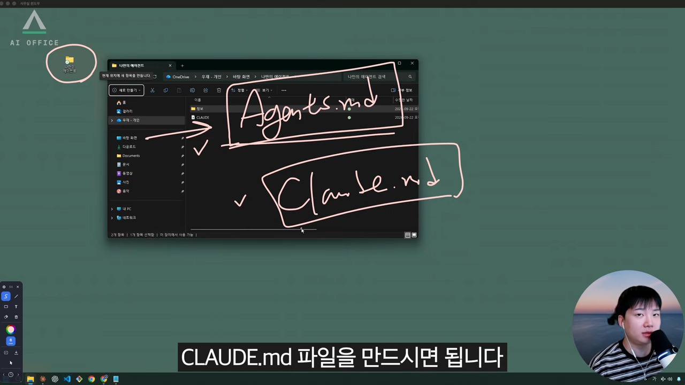